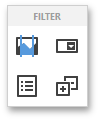
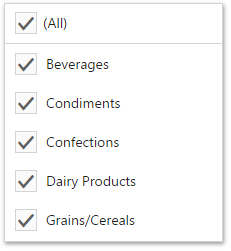

Filter Elements Overview
The Web Dashboard allows you to create three types of filter elements that provide the capability to filter other dashboard items.
To add the required filter element to the dashboard, use corresponding buttons into the Filter section of the Toolbox.

Combo Box
The Combo Box dashboard item allows you to select a value(s) from the drop-down list.
You can switch the combo box type in the Combo Box's Options menu. The table below demonstrates available Combo Box's types.
| Standard | Checked |
|---|---|
| The Standard type allows you to select only a single value. | The Checked type allows you to select multiple values in the invoked drop-down list. |
 |
 |
By default, the Combo Box's dropdown contains an 'All' item that allows you to select/deselect all items in the Combo Box. To hide this item, turn off the Show 'All' Value option in the Combo Box's Options menu.
List Box
The List Box dashboard item allows you to select a value(s) from the list.
You can switch the list box type in the List Box's Options menu. The table below demonstrates available List Box's types.
| Checked | Radio |
|---|---|
| The Checked type allows you to select multiple values in the list box. | The Radio type allows you to select only a single value in the radio group. |
 |
 |
Tree View
The Tree View dashboard item displays values in a hierarchical way and allows you to expand/collapse nodes.

You can manage the initial expanded state of filter values using the Auto Expand option in the Tree View's Options menu.